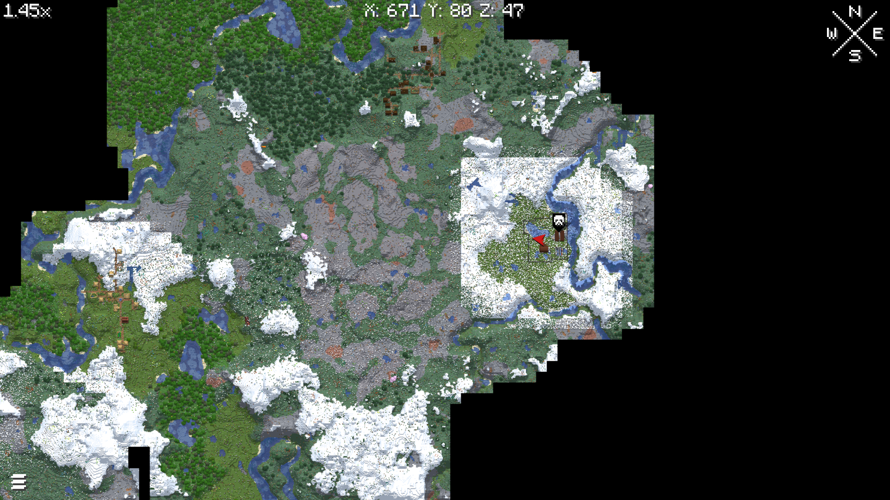

The oldest and largest settlement.
Agaria is currently the biggest, and is the oldest settlement on the server.
It is currently going under massive expansion to supply the needs of all travellers.
Currently it boasts ample land for personal shelters, a tavern with you basic needs, and also a weapons manufactory and reloading.
It is also currently the largest supplier of electricity to the power grid, with plans to expand as needed.
One of the original buildings in the settlement of Agaria.
It's main purpose is a gathering area for any travellers, and to provide them with the basic necessities, such as food and basic tools - for a fee of course.
While taking full advantage of the modpack, the basic accepted currency is the coins that are included with the modpack, resulting in a somewhat limited supply, due to the nature of obtaining the coins.
Thus meaning the coins themselves are anti-inflationary and keep the value they are assigned, as they are physical entities.
One of the newer editions to Agaria, Frisk_E's Firearms aims to provide more advanced weaponry to travellers, as well as supply them with all sorts of ammunition.
With the threat of raids (by NPC's) on the server, it is important to have a substantial defence.
A future update of this site will have a link to the available options and prices at this store.
Constructed alongside the Tavern, it provides (currently) free power to any building in Agaria.
Although it is currently free, potentially any new buildings may be charged for power usage after the installation of the electric fence on top of the wall - resulting in the need for massive powergrid expansion.